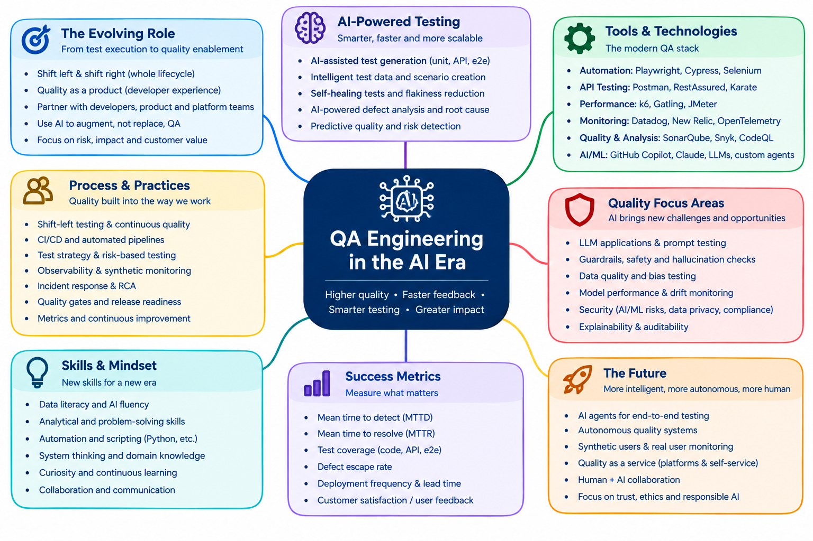

QA Engineering in the AI Era¶
Higher quality · Faster feedback · Smarter testing · Greater impact
A hands-on workshop for QA engineers, SDETs, developers and engineering leaders. Each module covers one part of how quality engineering is changing, and nine runnable labs put it into practice on a small demo shop that includes an AI support assistant, which an AI agent then tests in the last lab.

What you will be able to do afterwards¶
- Explain how the QA role is moving from test execution to quality enablement, and what that means for your team.
- Use AI to generate, review and maintain tests without trusting it blindly.
- Build a layered automation suite (unit, API, E2E, performance) that gives fast, reliable feedback.
- Test an LLM feature: grounding, hallucination, prompt injection and scope, with an eval suite that runs in CI.
- Turn test evidence into a release decision with a quality gate.
- Measure quality with MTTD, MTTR, DORA metrics and defect escape rate, and know what each one hides.
How the workshop is organised¶
-
Quickstart
Install, run 35 tests, and break the AI assistant on purpose. About 15 minutes, no API key.
-
8 Modules
One per theme of the map: concepts, discussion, a short exercise and takeaways per role.
-
9 Labs
Step-by-step and hands-on: Playwright and accessibility, API tests, AI test generation, k6, LLM evals and red teaming, quality gates, metrics, and an AI agent testing the shop.
-
Agendas
Half-day, full-day and two-day formats, with tracks for QA, developers and managers.
Three tracks, one workshop¶
The audience is deliberately mixed. Every module ends with takeaways per role, and the labs are tagged so each person can choose what to do hands-on.
All nine labs. Focus on Labs 1-7 and 9: automation, AI-assisted generation, flakiness, LLM evaluation, quality gates and AI agents.
Labs 1, 2, 4, 6 and 7. Own the tests for your own code, make LLM features testable, and wire the quality gate into your pipeline.
Modules 1, 4, 6, 7 and 8, plus Labs 7, 8 and 9. Read the gate output and the metrics, and decide what "ready to release" means for your team.
The demo app in one paragraph¶
Quality Books is a tiny bookshop: a catalogue, a cart with a free-shipping rule, a deliberately slow recommendations widget, and an AI support assistant. The assistant runs in mock mode by default (deterministic, no API key needed), in buggy mode (hallucinates, leaks its prompt, answers off-topic questions) for the evaluation lab, or against a real Claude model if you have an API key. BUG_MODE=cart plants a pricing regression for the quality-gate lab. See Demo App.